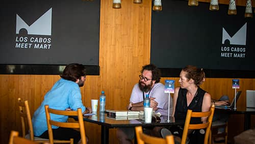
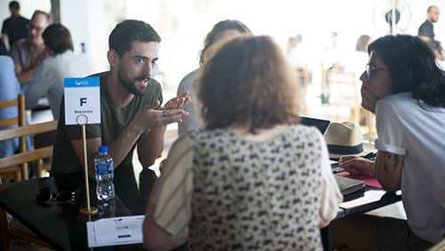
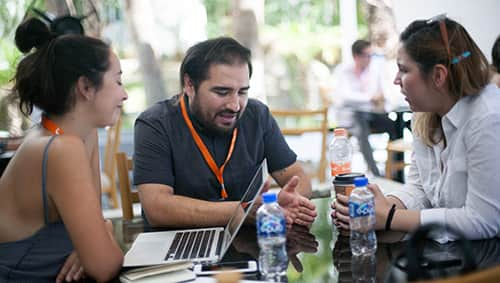
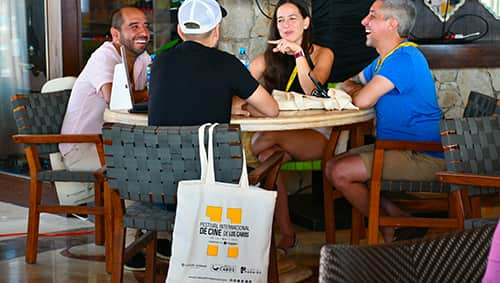

Es el punto de encuentro donde se reúnen todos aquellos que intervienen en la creación, realización y exhibición del cine independiente. Un lugar donde surgen historias y se genera comunidad, donde las conversaciones casuales tienen el potencial de convertirse en decisiones y compromisos.
Es aquí donde se traza un camino hacia distintas posibilidades para el desarrollo de nuestro cine.






